İçerikler şifrelenir
Mesaj ve dosya içerikleri şifrelenerek gönderilir.
TKGMNetChat · Windows uygulaması
Mesajlaşma, belge ve PDF işleri, mevzuat ve günlük araçlar. Tek bir Windows uygulamasında.
01 / Mülkiyetin Hafızası
Uygulama, beş bölümlük bir anlatıyla açılır: kâtibin masasındaki haritadan bugünün kentine. İsterseniz izleyin, isterseniz tek tıkla girişe geçin.
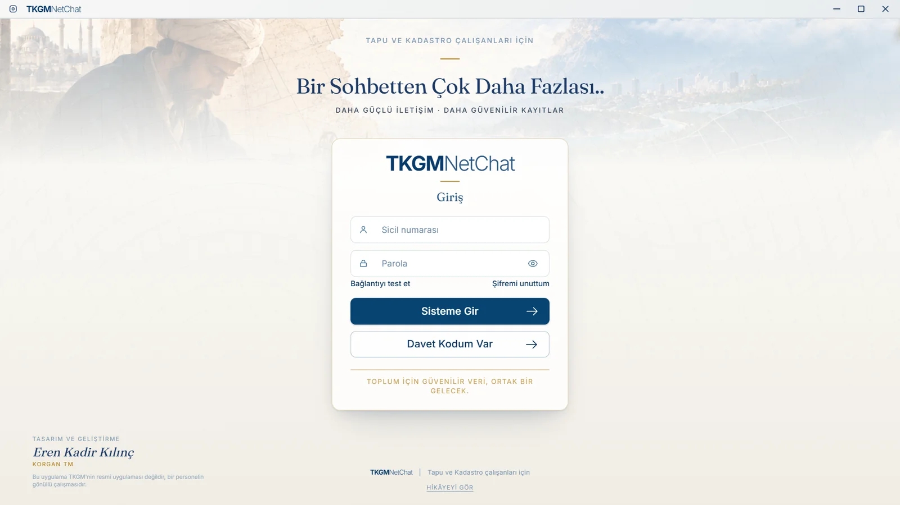
Giriş ekranı. Sicil numaranız ve parolanızla girersiniz.
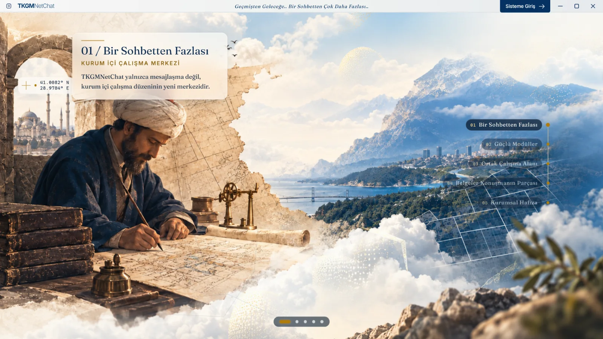
01 Bir Sohbetten Fazlası
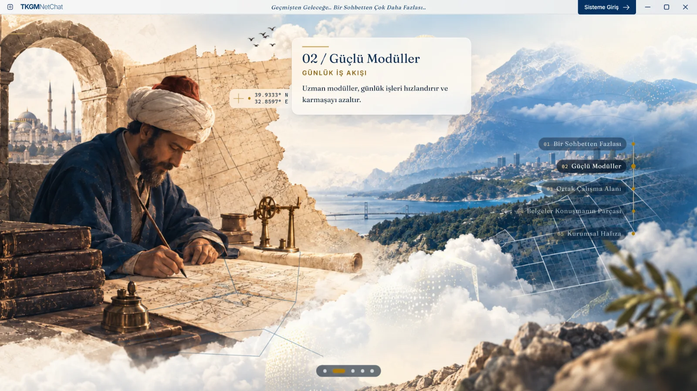
02 Güçlü Modüller
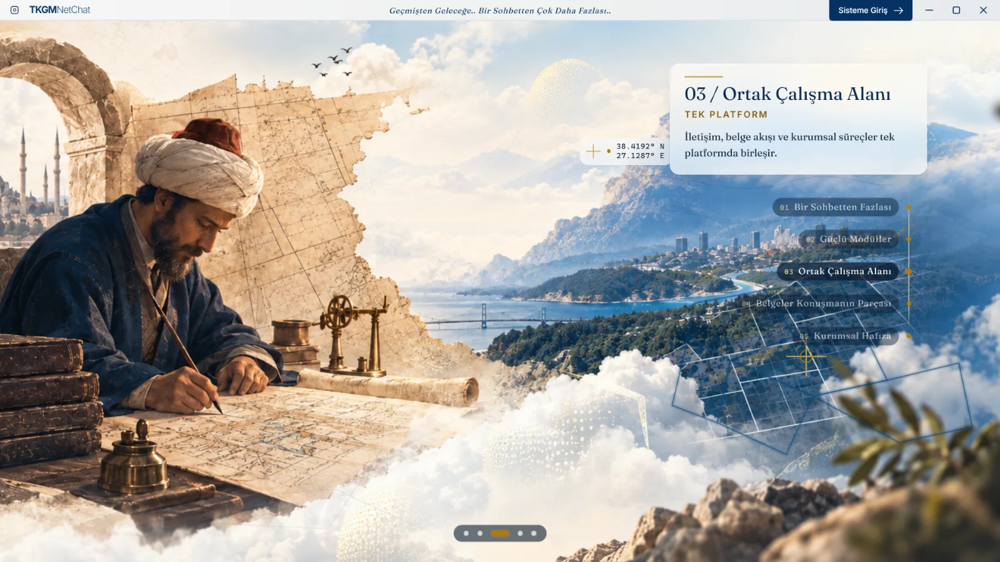
03 Ortak Çalışma Alanı
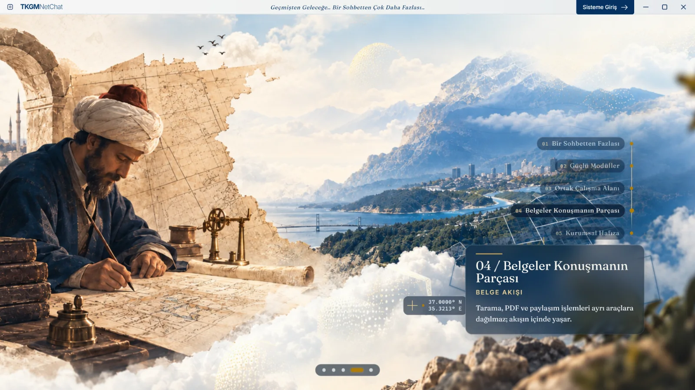
04 Belgeler Konuşmanın Parçası
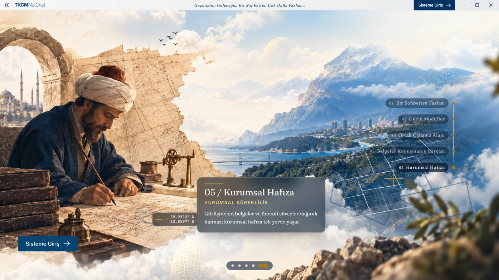
05 Kurumsal Hafıza
02 / Modüller
Kaydırdıkça uygulamanın gerçek ekranlarını görün.
01
Güne tek ekrandan başlayın. Kısayollar, duyurular ve çevrimiçi çalışma arkadaşları bir arada. Düzeni sürükleyip bırakarak kendinize göre ayarlayın.
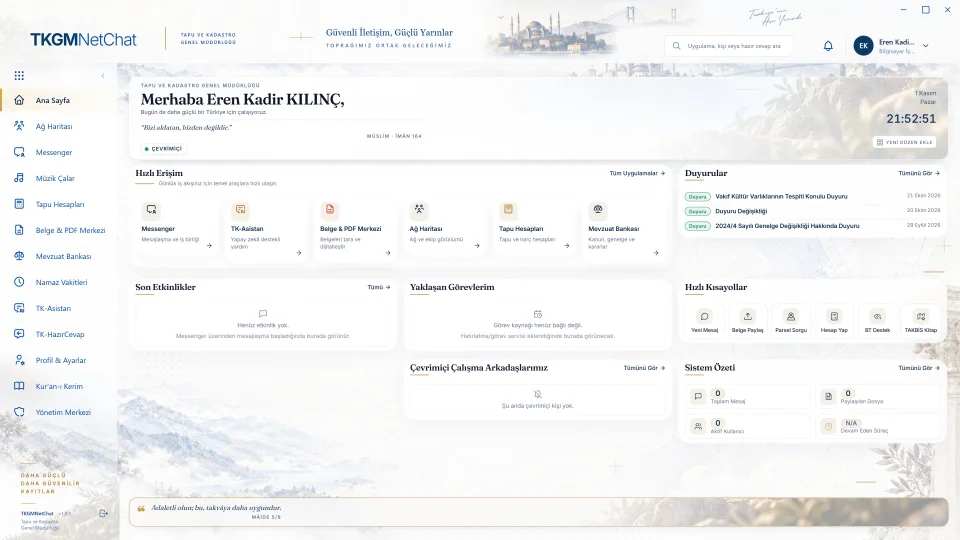
02
Kimin çevrimiçi olduğunu canlı bir listede, son görülme bilgisiyle görün.
Yerel ağ harita görünümü geliştiriliyor. Bu sürümde canlı liste hazır.
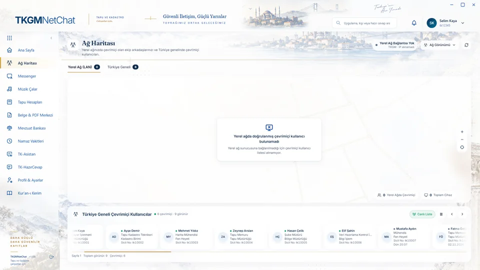
03
Birebir ve grup sohbetleri. Dosya, sesli not ve anket gönderin; sesli ve görüntülü arayın, ekranınızı paylaşın. Mesaj ve dosya içerikleri şifrelenir.
Görseldeki kişiler ve mesajlar örnektir.
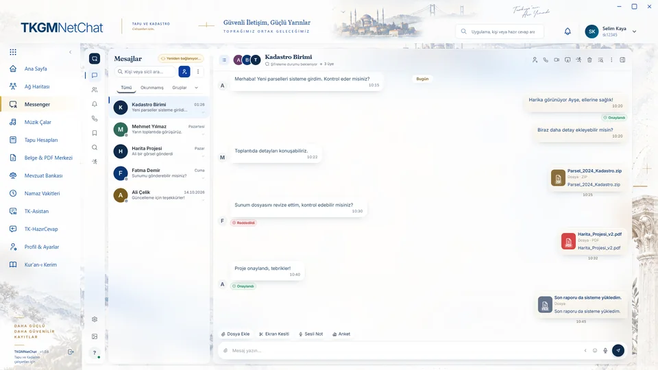
04
Çalışırken arka planda radyo ve müzik. Yüzlerce istasyon, türe ve ülkeye göre filtre, favoriler. YouTube’dan da müzik açabilirsiniz.
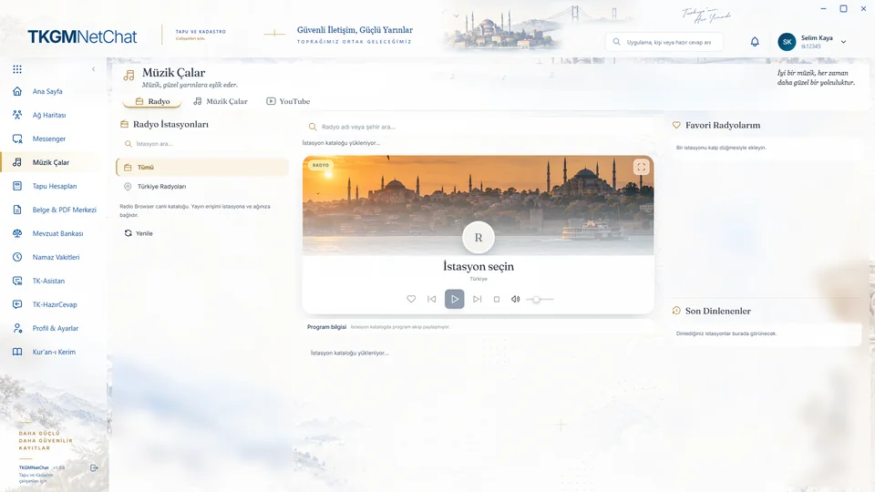
05
Pay/payda, hisse dağılımı, miras ve tapu harcı hesapları. 3/8 gibi kesirli girişleri anlar, sonucu tek tıkla kopyalarsınız.
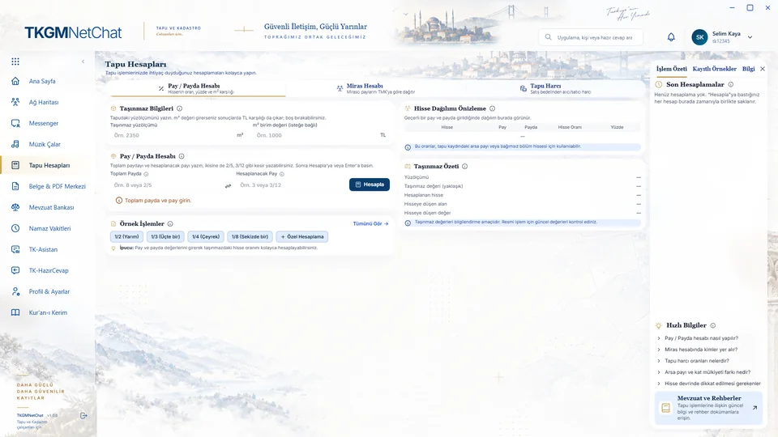
06
Belgenin bütün yolculuğu tek yerde: tarayın, okuyun, düzenleyin, gönderin.
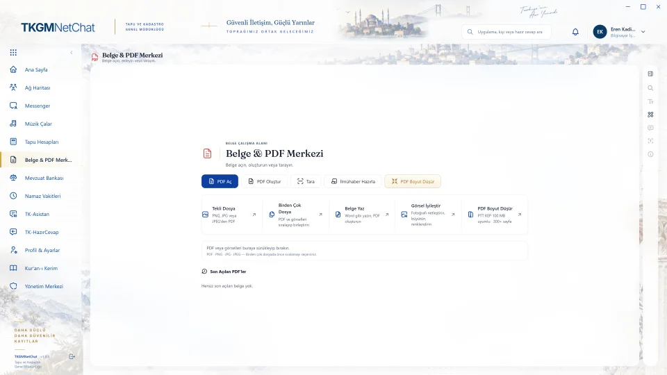
07
Kanun, yönetmelik, genelge ve talimatlar kategori kategori. Adıyla arayın, yan panelde okuyun ya da PDF Merkezi’nde açın. Liste günde bir kez denetlenir.
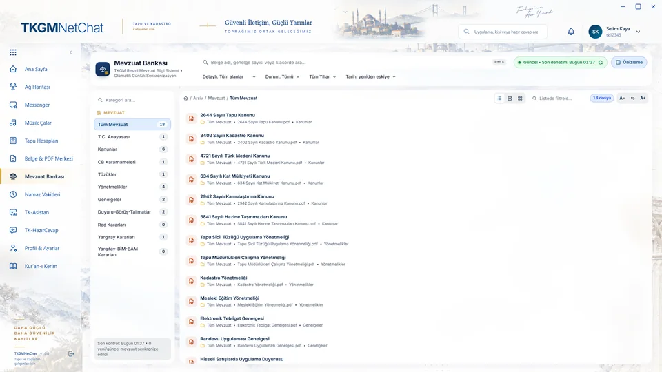
08
İl ve ilçenize göre Diyanet vakitleri ve sonraki vakte kalan süre. Zikirmatik ve kaza namazı çizelgesi de burada.
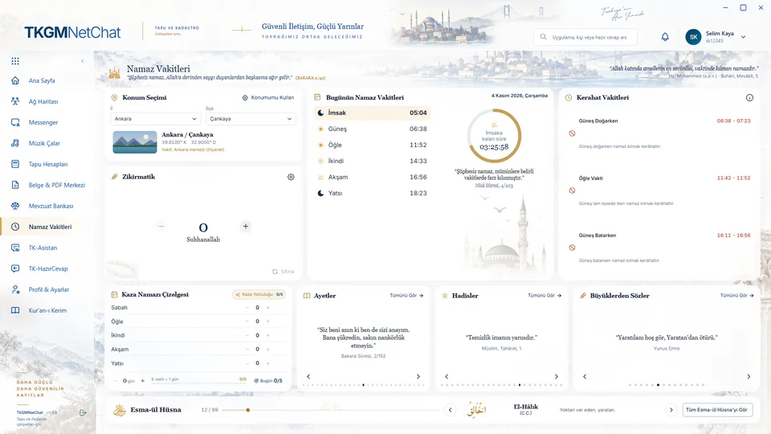
09
Google Gemini ile çalışan yardımcı. Kendi anahtarınızla çalışır; anahtar yalnızca sizin bilgisayarınızda saklanır.
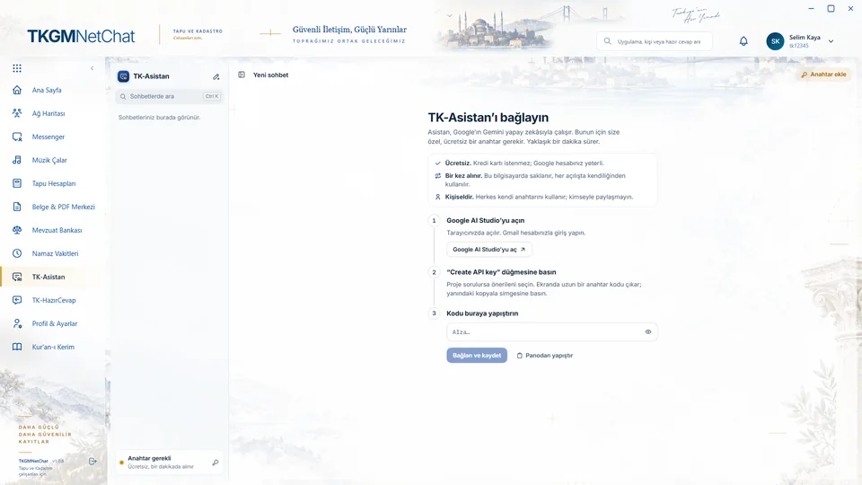
10
Sık yazılan yanıtlar hazır: bilgilendirme, eksik evrak, hatalı evrak ve başvuru kapatma. Seçin, kopyalayın, gönderin.
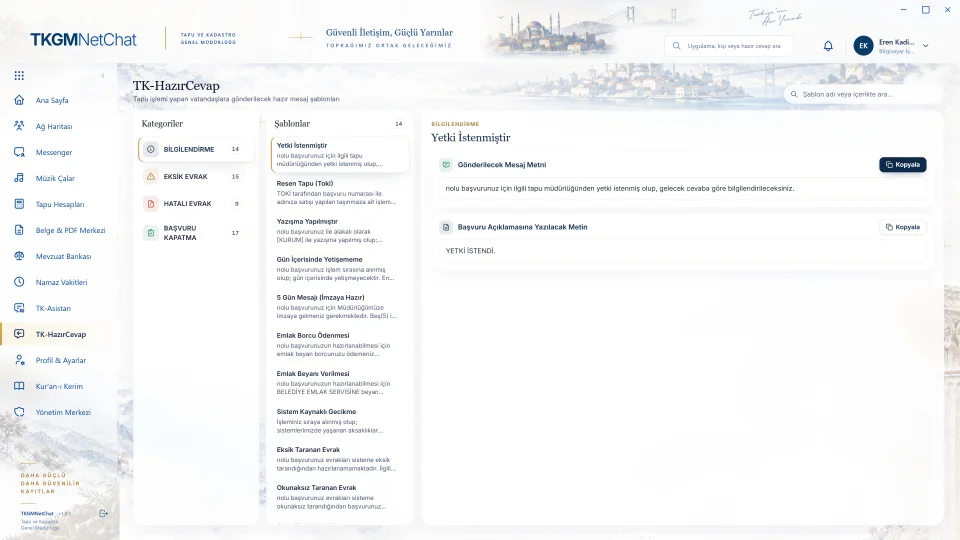
11
Arapça metin ve Türkçe meal yan yana. Sesli dinleyin, not alın, favorilerinizi işaretleyin.
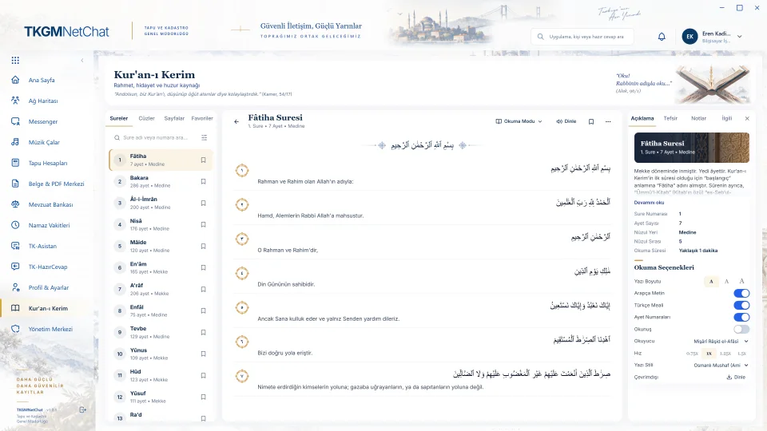
12
Yalnızca yetkili yöneticiler için: kullanıcılar, roller, bekleyen onaylar ve işlemlerin denetim kaydı.
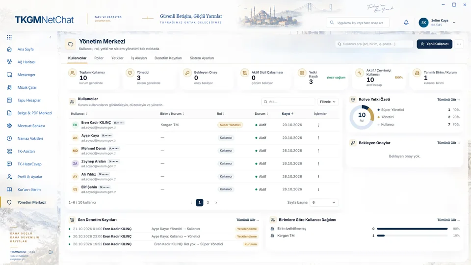
13
Fotoğraf, iletişim bilgileri, durum ve şifre. Uygulama sürümünü ve güncellemeleri buradan denetleyin.
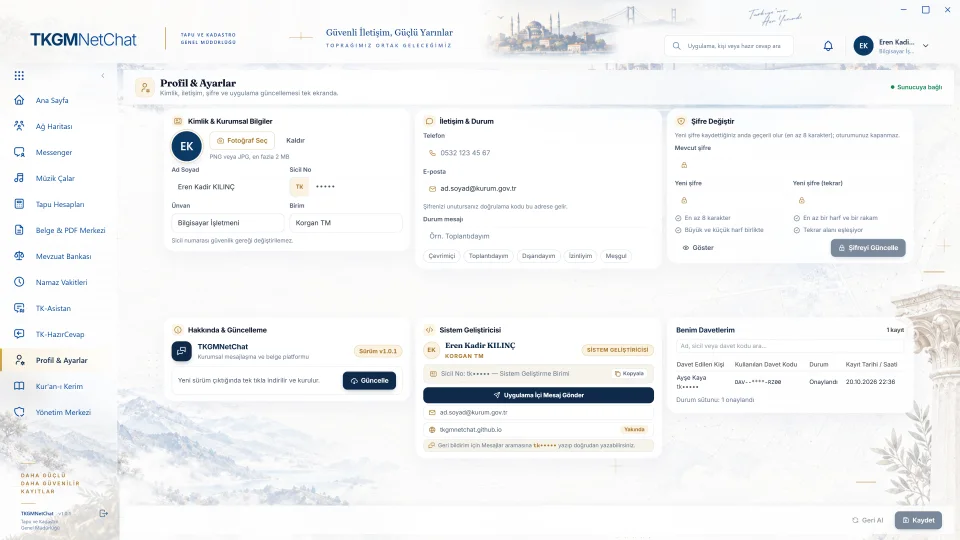
03 / Güvenlik
Mesaj ve dosya içerikleri şifrelenerek gönderilir.
İndirdiğiniz dosyanın değişmediğini SHA256 özetiyle kontrol edebilirsiniz.
Kurulum dosyası henüz dijital olarak imzalı değil. Bu yüzden Windows ilk açılışta “tanınmayan uygulama” diyebilir.
PowerShell’de bu komutu çalıştırın. Çıkan değer, alttaki özetle aynı olmalı.
Get-FileHash .\TKGMNetChat-Kurulum.exe -Algorithm SHA2561b34699177b1e0bc7ae442eb633ebd761b44382186635df26b7be2c37878842d04 / Kurulum
“Windows için indir” düğmesine basın, dosyayı kaydedin.
Dosyaya çift tıklayın. Kurulum yönetici izni istemez.
Uygulama açılınca sicil numaranız ve parolanızla girin.
Uyarıdaki Ek bilgi (bazı sürümlerde “Daha fazla bilgi”) bağlantısına, ardından Yine de çalıştır düğmesine basın. Uyarı, dosya henüz imzalı olmadığı için çıkar. Emin olmak için önce dosya özetini kontrol edin.
Windows 10 ve Windows 11, 64 bit.
Hayır. Uygulama yalnızca sizin kullanıcı klasörünüze kurulur. Kurum bilgisayarına kurmadan önce BT biriminize haber vermenizi öneririz.
Giriş ekranındaki Davet Kodum Var düğmesiyle, size verilen davet koduyla hesabınızı oluşturabilirsiniz.
Uygulama yeni sürümü kendisi denetler ve indirir. Kurulum için onayınızı ister. Profil & Ayarlar’dan elle de denetleyebilirsiniz.
Güvenlik bölümündeki komutla dosyanın SHA256 özetini alın ve sayfadaki değerle karşılaştırın. Aynıysa dosya değişmemiştir.